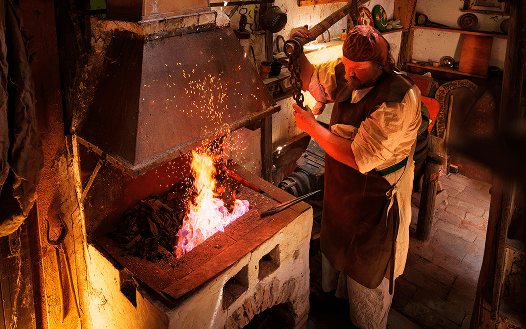
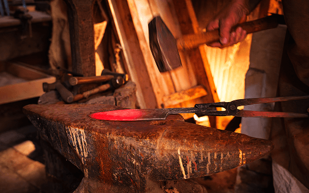
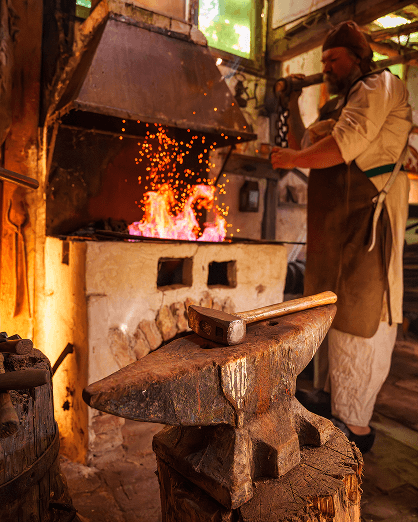
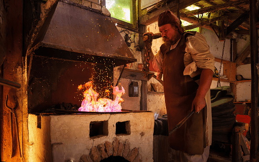
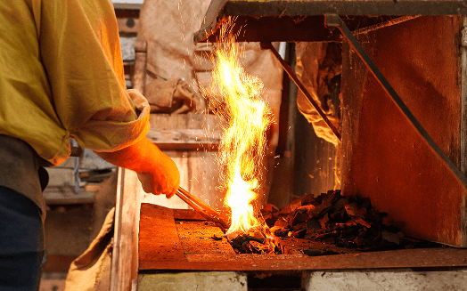
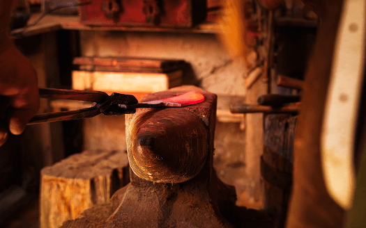
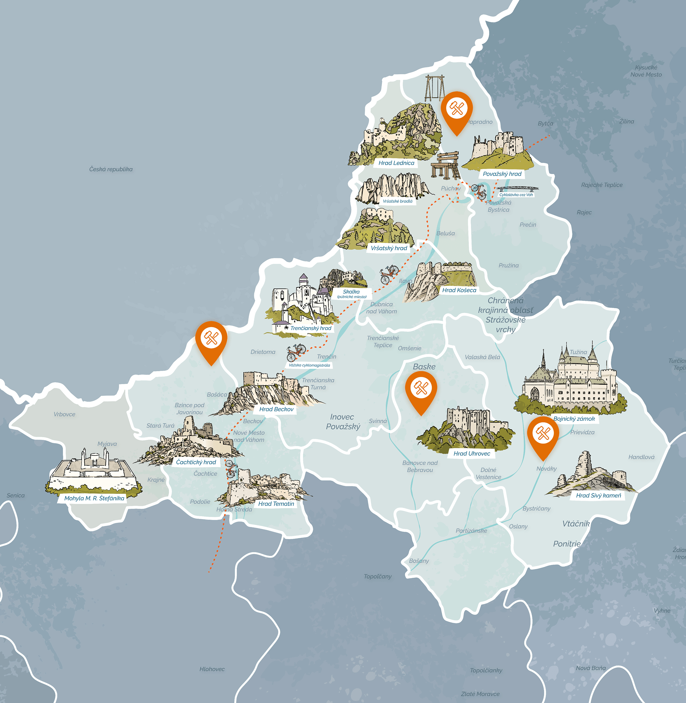
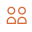

“Rozžeravený kov, iskry a rytmické údery kladiva – kováčstvo je remeslo, kde sa z ohňa rodia nástroje aj umelecké diela.”
Kováčstvo patrí medzi tradičné remeslá Trenčianskeho kraja a bolo neoddeliteľnou súčasťou každodenného života.



Kováčstvo sa zameriava na spracovanie kovu za vysokej teploty, najčastejšie jeho zahrievaním v ohni a následným tvarovaním údermi kladiva na nákove. Vznikajú pri ňom praktické aj dekoratívne predmety. Kováči vyrábali a opravovali nástroje potrebné pre poľnohospodárstvo a remeslá, ako aj podkovy, kovové súčiastky či rôzne úžitkové predmety pre domácnosť. Ich práca bola nevyhnutná pre fungovanie každodenného života v obciach.



Okrem úžitkových predmetov vznikali aj ozdobné prvky, ako sú kované brány, mreže, zábradlia či dekorácie, ktoré dodnes zdobia historické aj súčasné stavby. Kováčstvo tak spája funkčnosť s estetikou a predstavuje významnú súčasť remeselnej tradície regiónu.

Kováč bol v minulosti jedným z najváženejších remeselníkov v obci, pretože jeho práca bola nevyhnutná pre fungovanie každodenného života.

Páry: 0/8Výborne!
Našiel si všetky dvojice.